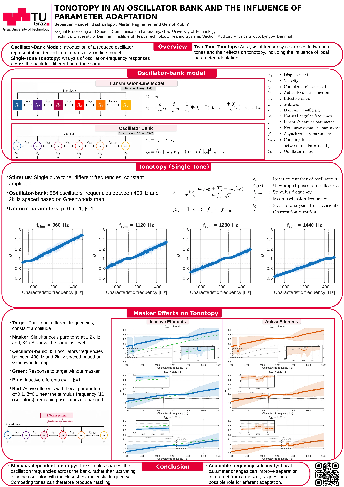
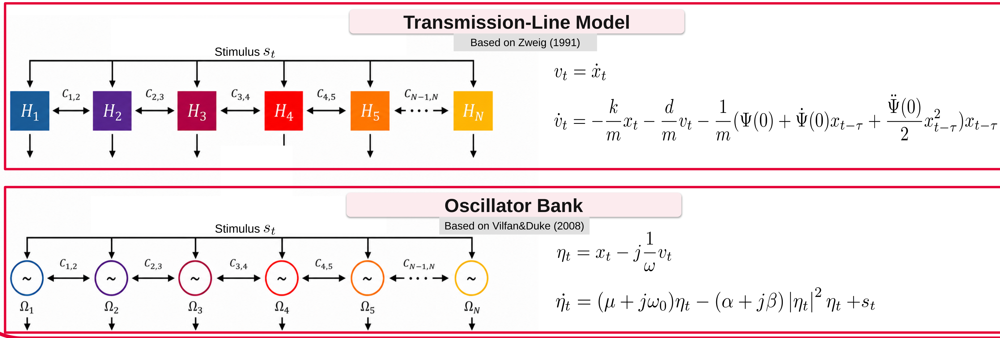

Stimulus-dependent tonotopy
A position in the bank does not represent a fixed response frequency under every input. The stimulus shapes oscillation frequencies across the bank; competing tones can therefore produce masking.
POSTER & SUPPLEMENTARY MATERIAL
How competing tones shape frequency responses across a cochlear oscillator bank—and how local parameter adaptation can improve their separation.
Signal Processing and Speech Communication Laboratory
Graz University of Technology

View full posterTHE POSTER AT A GLANCE
A position in the bank does not represent a fixed response frequency under every input. The stimulus shapes oscillation frequencies across the bank; competing tones can therefore produce masking.
Local changes to oscillator parameters can improve separation of a target from a masker. The poster explores this as a possible role for efferent adaptation.
01 / MODEL
A local transmission-line element with delayed active feedback can be represented near a Hopf bifurcation by a Stuart–Landau oscillator. Coupling these elements gives a reduced dynamical model of the cochlear partition.
The complex state combines displacement and velocity. Its linear and cubic coefficients describe the local operating regime, amplitude saturation and amplitude–phase coupling.
In the bank, coupling between elements is added to each local oscillator equation.
The delayed-feedback parameters map to the oscillator coefficients as follows. Only the correspondences are shown here.

THE TONOTOPY EXPERIMENT
The poster uses 854 oscillators spanning 400 Hz–2 kHz, spaced according to Greenwood’s map. Single-tone simulations use uniform parameters μ = 0, α = 1 and β = 1.
In the two-tone condition, a 1.2 kHz masker is 84 dB above the target level. Local adaptation reduces α and β from 1 to 0.1 for ten oscillators near the target frequency, with the remaining oscillators unchanged.
The rotation number compares the mean oscillation frequency with the reference stimulus frequency. ρ = 1 indicates matching mean frequencies. Values above or below one indicate faster or slower oscillation.
02 / FIGURES
Supplementary amplitude sweep and enlarged views of the poster figures. Select a figure to inspect it at full size.
03 / ANIMATION
Explore how the response across the bank changes during a masking sweep.
The animation will be added here when the simulation video is available.
04 / DOWNLOADS & CODE